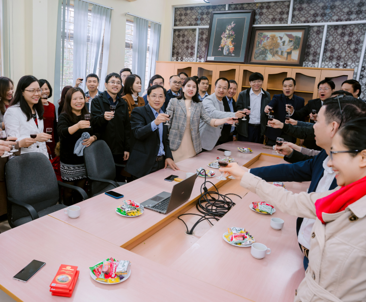
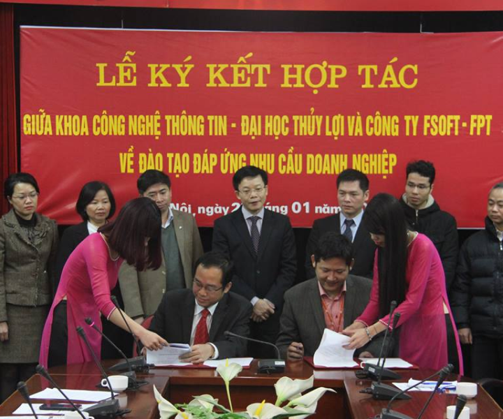

Khoa có 60 giảng viên trực tiếp tham gia giảng dạy, trong đó có 05 Phó giáo sư, 20 Tiến sỹ và 12 nghiên cứu sinh với năng lực công bố quốc tế tốt. Phần lớn các Tiến sỹ của Khoa đều tu nghiệp tại nước ngoài có nền khoa học tiên tiến về CNTT, các giảng viên còn lại của Khoa đều có trình độ Thạc sỹ.
Lịch sử phát triển
Năm 2001, lãnh đạo Bộ Nông nghiệp & PTNT, lãnh đạo trường Đại học Thủy lợi khi đó đã nhận ra xu hướng và cơ hội của ngành Công nghệ thông tin (CNTT) trong tương lai, đồng thời cũng do nhu cầu bức thiết về đội ngũ kỹ sư công nghệ thông tin trong ngành và toàn xã hội, khoa CNTT được thành lập ngày 19/11/2001 từ việc sáp nhập Trung tâm tin học và Bộ môn Toán học của trường.
Kể từ khi thành lập, Khoa CNTT đã phát triển không ngừng. Bước trưởng thành quan trọng nhất được thể hiện qua sự đổi mới, kiện toàn chương trình đào tạo. Bắt đầu từ năm 2007, Khoa đã tập trung thực hiện việc chuyển đổi toàn bộ chương trình, giáo trình đào tạo, thiết kế theo cùng ngành của trường ĐH Michigan - Hoa kỳ.
Triết lý đào tạo
Trên tinh thần lấy sinh viên và giảng viên làm trung tâm của quá trình phát triển
Nguyên tắc đào tạo
Nơi đào tạo uy tín với nền tảng cốt lõi về CNTT, phát triển phần mềm, hệ thống thông tin, trí tuệ nhân tạo và quản trị an ninh mạng
Tiềm năng phát triển
Khoa luôn mở rộng quy mô tuyển sinh cho cả đại học, sau đại học với trên 450 chỉ tiêu năm 2023 và tăng thêm theo mỗi năm

Về đội ngũ giảng viên

Về đào tạo
Khoa có 5 ngành đào tạo bậc đại học là Công nghệ thông tin, Kỹ thuật phần mềm, Hệ thống thông tin, Trí tuệ nhân tạo, An ninh mạng; một chuyên ngành bậc sau đại học là Công nghệ thông tin. Khoa luôn cập nhật sách và giáo trình mới nhất, đang được nhiều trường đại học uy tín trên thế giới sử dụng, các bài giảng đều cung cấp trực tuyến cho sinh viên.
Về NCKH và hợp tác quốc tế
Khoa đạt được nhiều thành tích cao, các thầy cô đã công bố trên 160 bài báo khoa học, trong đó chủ yếu là công bố quốc tế và có 47 bài thuộc danh mục SCI/SCIE. Các thầy cô trong Khoa chủ nhiệm và tham gia trên 10 đề tài cấp nhà nước và hàng chục đề tài nghiên cứu khoa học cấp Bộ. Khoa có những hợp tác quốc tế và giao lưu khoa học bền vững với các trường đại học uy tín của Mỹ (Delta University, Arkansas University, Colorado State University), Pháp (Paris 6, IRD, UMMISCO), Trung Quốc (ĐH Thâm Quyến, Viện công nghệ tiên tiến Thâm Quyến, ĐH Khoa học và công nghệ phương Nam), Nhật (JAIST, Nara Women's University), Úc (Griffith University, Deakin University, Monash University) theo các chương trình trao đổi hợp tác nghiên cứu, trao đổi giáo viên và sinh viên.
